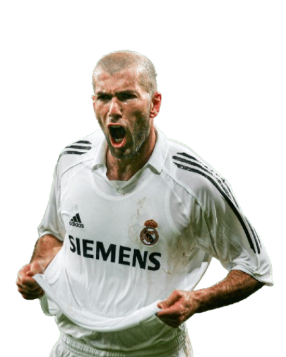
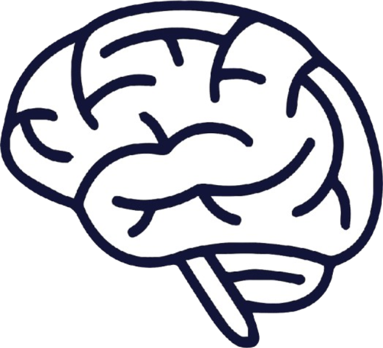
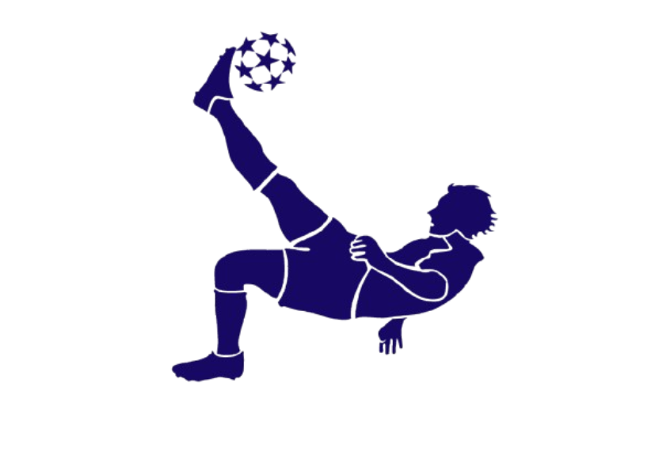
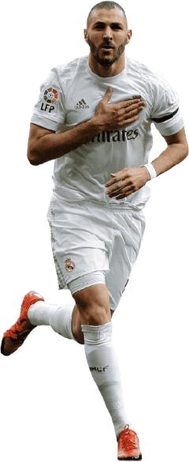

Todos los Ganadores
En la historia del futbol, muchas leyendas han participado y han otorgado este premio como ahora Lionel Messi, Cristiano Ronaldo, Michel Platini, Johan Cruyff, Marco van Basten, Franz Beckenbauer, Ronaldo Nazário, Zinedine Zidane, Ronaldinho, George Best, Paolo Rossi, Karl-Heinz Rummenigge, Alfredo Di Stéfano, Kevin Keegan, Stanley Matthews, Kaká, Rivaldo, Fabio Cannavaro, Luka Modrić, Karim Benzema, Lev Yashin, Roberto Baggio, Andriy Shevchenko, Luis Figo, Pavel Nedved, George Weah, Jean-Pierre Papin.

Johan Cruyff
Johan Cruyff fue el genio que transformó el fútbol en arte. Con su talento y visión, lideró la revolución del "fútbol total", ganando tres Balones de Oro y dejando una huella eterna en el Ajax, el Barcelona y el mundo entero. Su legado vive en cada pase, cada idea y cada sueño de jugar bonito.

Zinedine Zidane
Zinedine Zidane fue la definición de la elegancia y la magia en el campo. Su genio y control lo convirtieron en un símbolo de grandeza, llevando a Francia a la gloria con su talento sublime. Con un Balón de Oro y una Copa del Mundo, su legado es eterno, siendo una inspiración para generaciones de futbolistas y fans.

Platini
Michel Platini fue un mago del balón, el líder indiscutible de Francia en la década de los 80. Con su visión, técnica y capacidad para decidir partidos, se convirtió en tres veces Balón de Oro, dejando un legado imborrable como uno de los jugadores más completos y elegantes de la historia del fútbol.
Lionel Messi

Zurda

Mentalidad

Habilidad
Lionel Messi es un jugador excepcional, conocido por su increíble visión de juego, dribbling inigualable y capacidad para definir en momentos clave. Juega como atacante, ya sea de falso 9, extremo o mediocampista, siempre dejando una huella en cada partido. Ha ganado el Balón de Oro en 2009, 2010, 2011, 2012, 2015, 2019, 2021 y 2023 siendo así el jugador con mas trofeos del planeta.
Información
Shevchenko
Andriy Shevchenko es uno de los máximos goleadores de la historia del fútbol, conocido por su potente remate y su capacidad para decidir partidos en momentos cruciales. Nació en Ucrania y destacó en equipos como el Dinamo de Kiev y el AC Milan, donde alcanzó su mayor gloria. Ganó el Balón de Oro en 2004, tras una temporada sobresaliente con el Milan, llevándolos a la final de la Liga de Campeones. Su legado perdura como uno de los mejores delanteros de su generación.
Información
Shevchenko
Andriy Shevchenko es uno de los máximos goleadores de la historia del fútbol,
conocido por su potente remate y su capacidad para decidir partidos en momentos cruciales.
Nació en Ucrania y destacó en equipos como el Dinamo de Kiev y el AC Milan,
donde alcanzó su mayor gloria. Ganó el Balón de Oro en 2004, tras una temporada sobresaliente con el Milan,
llevándolos a la final de la Liga de Campeones.
Su legado perdura como uno de los mejores delanteros de su generación.
Información
Polémicas
Descubre aquí los Balones de Oro más polémicos de la historia

caso 1
Pese a que Benzema merecía el galardón por su magnífica temporada con el Real Madrid,
ciertos seguidores opinaron que el galardón debería haber sido concedido a otros futbolistas,
como Robert Lewandowski, quien tuvo una temporada sobresaliente con el Bayern Munich pero perdió
la oportunidad de obtener el premio en 2020 debido a la pandemia y la anulación de la ceremonia.

caso 2
En 2001, Michael Owen ganó el Balón de Oro tras conquistar la FA Cup, la Copa de la Liga y la Copa UEFA con el Liverpool.
Sin embargo, muchos pensaban que Raúl, máximo goleador de la Champions y figura del Real Madrid, lo merecía más.
La elección fue muy criticada, especialmente en España.

caso 3
En 2018, Luka Modrić ganó el Balón de Oro tras liderar a Croacia hasta la final del Mundial
y ganar la Champions League con el Real Madrid. Aunque su rendimiento fue muy valorado,
muchos creyeron que Cristiano Ronaldo, goleador y figura en esa Champions, lo merecía más.
También se mencionó a Griezmann, campeón del mundo y de la Europa League.
El premio a Modrić fue visto por algunos como un intento de romper la hegemonía Messi-Ronaldo.
Información